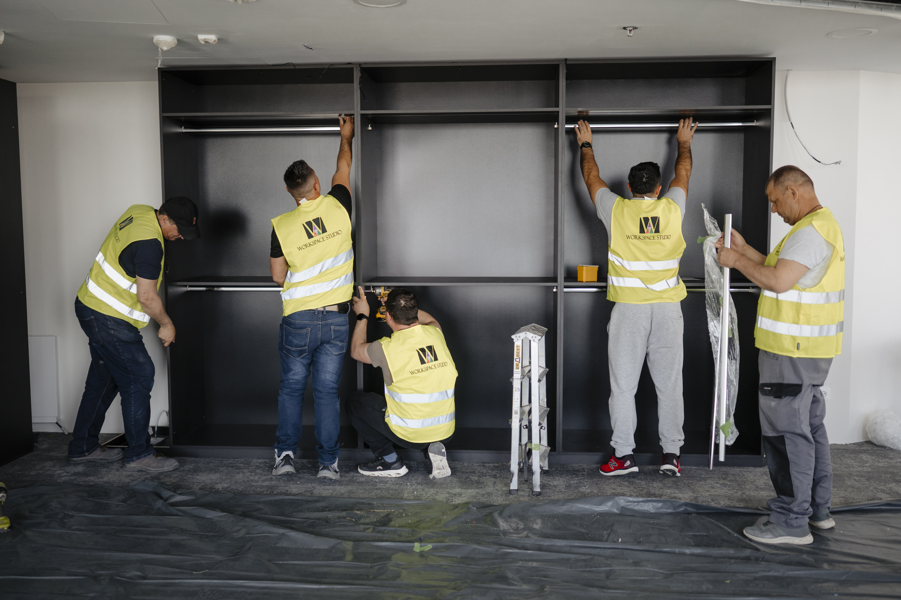
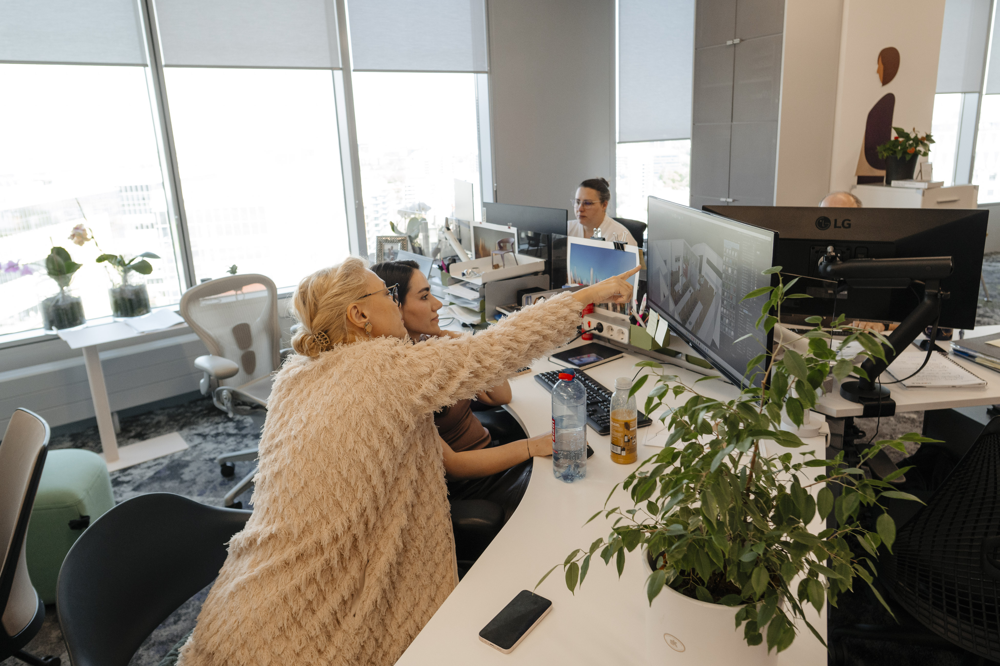
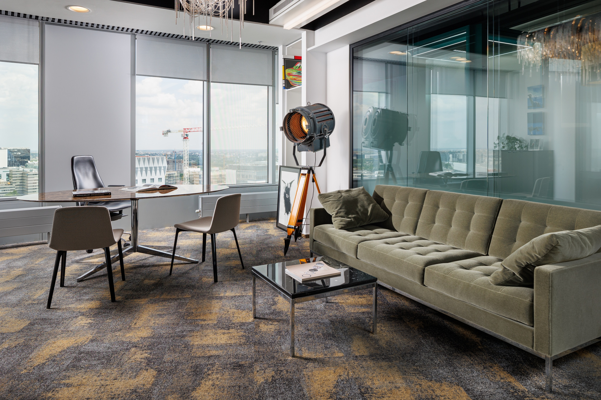

Corporate workplace delivery in Romania
Why us
Full-service workplace transformation partner for office projects at any scale.
15+ years and 500,000 m² of corporate fit-out delivered in Romania speak through the projects themselves. But what makes the difference lies in the team that delivers the work, the partnerships that supply it, and the high operational standards that hold from concept through Day-2 service.
Corporate fit-out delivered
Corporate clients
Projects completed
Stable senior teams, fast decisions, practical workplace expertise.

Workspace Studio operates with 70+ directly employed specialists. The senior team is stable, with most members having worked together for years, which compresses coordination time and means decisions on site happen quickly.
15+ years of delivery in Romania across energy, banking, FMCG, tech, pharma and industrial-adjacent offices means the team has likely seen a project similar to yours.
But every project starts fresh. Each one is mapped to the organisation's structure, working patterns and cultural context, so the resulting office reflects how your company actually works.
Beyond direct delivery expertise, the team trains continuously alongside leading brands, including MillerKnoll, bringing global workplace research and product systems into the practical work of specification, installation and post-occupancy adjustment.
Proven track record
Integrated capability at scale.
Office projects often involve multiple separate vendors: a designer, a general contractor, a furniture supplier, a facilities provider and other solution providers. Each with its own contract and its own scope. Workspace Studio integrates all under one contract and single point of contact for your in-house team.
Boutique offices of 100 m², corporate headquarters of 30,000 m², single-floor refurbishments in existing buildings, multi-floor relocations into new builds, light-touch reconfigurations of operational offices, full Design & Build of new corporate HQs. Workspace Studio delivers across the full range.
Scale brings repeatable processes for procurement, quality control, site logistics and stakeholder communication. Range brings the operational vocabulary for each sector. 700+ corporate clients and 3000+ projects mean the team has worked through the recurring problems and learned where the less obvious issues tend to hide.
- 700+
- corporate clients
- 3000+
- projects completed
- 30,000 m²
- large HQ delivery
Direct manufacturer partnerships
Direct sourcing, original warranty, shorter lead times.
MillerKnoll certified dealership
The MillerKnoll Certified Dealership in Romania anchors Workspace Studio's office furniture offer with Herman Miller, Knoll, NaughtOne, Geiger, HAY and other heritage brands of the world's largest workplace furniture collective.
500+ direct supply partners
Beyond MillerKnoll, Workspace Studio holds direct supply partnerships with 500+ additional manufacturers across acoustic pods, workstations, lounge furniture, café and dining, plus architectural products such as flooring, partitions, acoustic solutions and signage.
Commercial and service advantage
Direct sourcing on every corporate office project translates into manufacturer pricing, original product warranty, shorter lead times on critical items and access to manufacturer research and product roadmaps.
Single point of contact
Before and after handover.
The same Workspace Studio team that delivers the project handles Day-2 service after handover. Warranty handling, reconfigurations as the organisation evolves, maintenance and operational support continue under the same contract that built the office. Years after move-in day, the same chain of accountability is still active.

- 24h
- acknowledgment
- 72h
- guaranteed response
- Day-2
- service continuity
For Facility Management teams
A single vendor arrangement to manage across the lifecycle of the office, with one point of contact for service requests, reconfigurations, warranty handling and operational adjustments.
For Legal and Compliance teams
One contract that covers what would otherwise be multiple supplier agreements to negotiate, monitor, renew and audit. Workspace Studio's certifications (ISO 9001, ISO 14001, ISO 45001, EcoVadis) and standard contractual frameworks reduce vendor onboarding and audit overhead.
For HR and Leadership
An office that stays coherent over time. The workplace continues to support engagement, retention and return-to-office adoption as the organisation changes.
Specialist lenses
Budget, ergonomics and sustainability are built into the work.

Budget Centricity
Cost discipline embedded in office design from concept stage. Concepts validated against budget before technical design, in-house cost team working alongside architects from day one, budget locked at contract signing and held through delivery, plus structured change-management for client-driven scope changes.

Sustainability
Sustainability runs through material choices, design durability, operational flexibility and certifications. Workspace Studio sources recycled and recyclable products by default, from carpet tiles with recycled-content backing through manufacturers operating circular-economy programs.
The 12-year manufacturer warranty on Herman Miller seating, durable architectural systems, material choices calibrated for the full lease term and direct manufacturer relationships that extend product life through post-handover service translate into financial sustainability across the lifecycle of the office.
Partition systems, furniture, architectural products and infrastructure elements are built as modular and demountable, so the office can be reconfigured as the organisation evolves, with minimal waste and demolition. ISO 14001 certified environmental management and EcoVadis rating anchor the operation.

Ergonomics
Physical ergonomics starts at the individual workstation, the baseline for daily wellbeing. As MillerKnoll Certified Dealer in Romania, our offer features ergonomic seating starting from the iconic Aeron, Embody, Mirra 2 and other Herman Miller models, height-adjustable workstations, and monitor arms that ensure a correct and ergonomic position for every body.
Beyond the workstation, physical ergonomics extends across lighting, thermal comfort, acoustics and air quality, calibrated for how each space is used. But there is more to ergonomics beyond the physical. Social ergonomics is what we design for: how spaces are organised to support focused work, collaboration, informal exchange and quiet, so the office actively reduces operational friction across the working day.